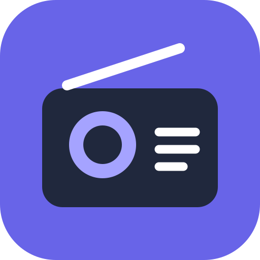

Catálogo comunitario de Radio Browser. Algunas emisoras pueden no estar disponibles o bloquear la reproducción en ciertos navegadores. Los favoritos se guardan en este dispositivo.
Emisoras de todo el mundo, en tu bolsillo
Catálogo comunitario de Radio Browser. Algunas emisoras pueden no estar disponibles o bloquear la reproducción en ciertos navegadores. Los favoritos se guardan en este dispositivo.
